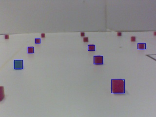

Student Robotics Vision system
The electronics kit your team recieved at kickstart contains a webcam - when mounted on your robot and plugged into your USB hub and slug, you can use the webcam to make your robot aware of it's surroundings in the arena, and to find & collect coloured blocks. While we've created the vision system to help your robot find it's way around the arena, it isn't limited to this if you can think up a better use for it.

To illustrate this, the picture to the right shows the inside of the (1/4 size) demonstration arena present at kickstart - you'll notice that most of the image is white, with red and blue blocks arranged on the floor, and to the far right a portion of black tape, outlining where the ramp would be.
The other primary feature of the image is the blue-rectangles outlining the blocks on the floor - the Student Robotics software package includes a program to process the output of the webcam and identify where blocks are located in the image. This allows you to trivially identify where coloured blocks exist in front of the webcam.
The Webcam
For vision to work, your webcam first has to be plugged into the USB hub supplied in your electronics kit, and that in turn must be plugged into the slug. The webcam itself can be attached to whatever part of your robot you wish - the clips on the base are sprung and will hold onto any edge on the robot, alternately you can unscrew the base and attach the webcam in some other way.
Once attached to your robot, the webcam should be angled so that the lense is pointing away from your robot and slightly downwards - if the webcam can see over the edge of the arena it might interpret objects outside as blocks, leading your robot in the wrong direction. Once the webcam is in the position you want, you should focus it by twisting the focus-ring around the lense to the correct position. You'll probably need to plug the webcam into a computer temporarily and run a video-viewing program to judge whether it's correclty focused.
The Environment
One noteable feature of the arena is the inside, apart from the ramp, blocks and robots, is completely white. This is to aid the operation of the vision software, which identifies blocks by how colourful they are - because other robots are black, and the rest of the arena is white, only the coloured blocks are recognized.
This also means that the vision system will only work with a white background. If you wish to test your robot's vision, you'll need an environment that has a uniform, very light colour (ie, white), and is well lit.
Programming interface
A typical vision program will look something like this:
yield vision()
if event == vision:
for blob in event.vision.blobs:
if blob.colour == RED:
print "Found red blob at " + str(blob.x) + ", " + str(blob.y)
Here, the yield statement returns control to the vision system, which fetches a frame from the webcam and processes it. For more information about 'yield'ing, see the programming introduction.
After the vision system returns, it's results are stored in the 'event' object. This takes the form of a list of 'blob's, stored in event.vision.blobs. Each blob corresponds to a coloured area seen by the webcam, and has several properties that you can access:
- 'x', 'y' - location of the top left corner of the blob in the webcam image
- 'width', 'height' - size of blobs dimensions
- 'mass' - number of pixels that make up this blob
- 'colour' - colour of this blob
The x, y, width and height properties are all on a scale of 0 to 100. So, a blob in the center of the image would have x and y locations of 50, 50. The mass is simply a count of how many pixels in the original image the blob took up, you can use this to compare the size of blobs. The colour is either RED, GREEN, or BLUE.
Using this information you can extract the position of a blob in the image taken by the webcam, then estimate where that blob is in relation to your robot.
Limitations
The vision system relies on having adequate lighting and a white environment, as described above. This means that, if you wish to test the vision system before the competition, you will need to construct such an environment.
Due to the low processing capabilities of the slug, the vision system takes a long period of time to complete - approximately 0.2 seconds at the last benchmark. Bear this in mind when programming your robot. You might consider halting motors before yielding to the vision system, to ensure that your robot is in the same position when you examine the list of blobs. Otherwise your robot will be in a different position when you recieve the vision results, making any course alterations inaccurate.